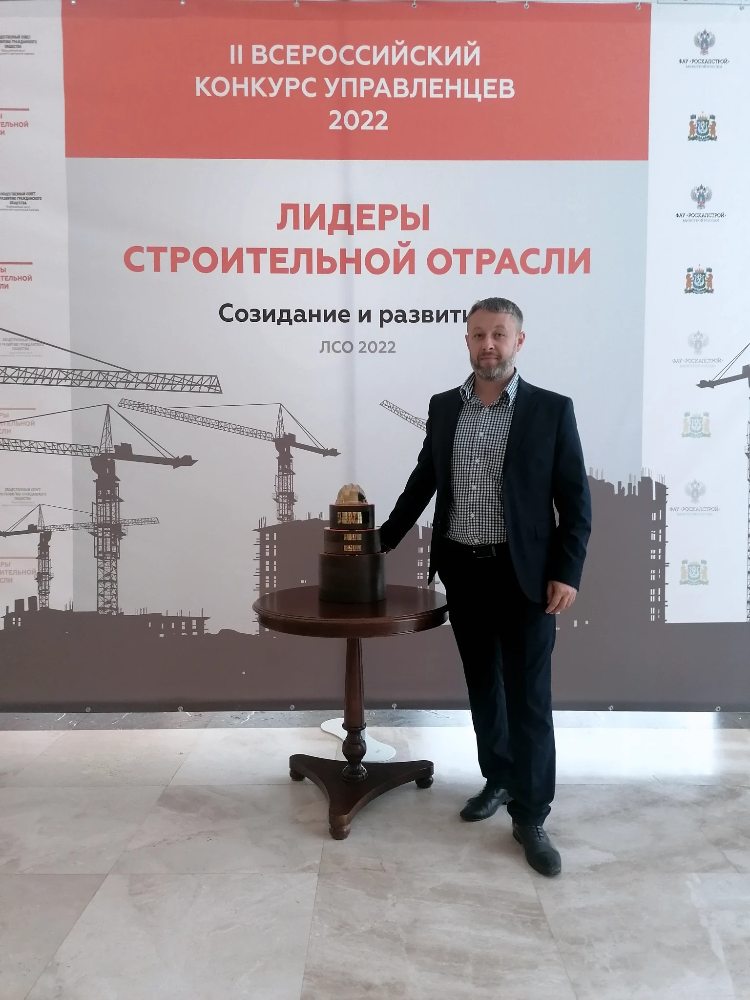
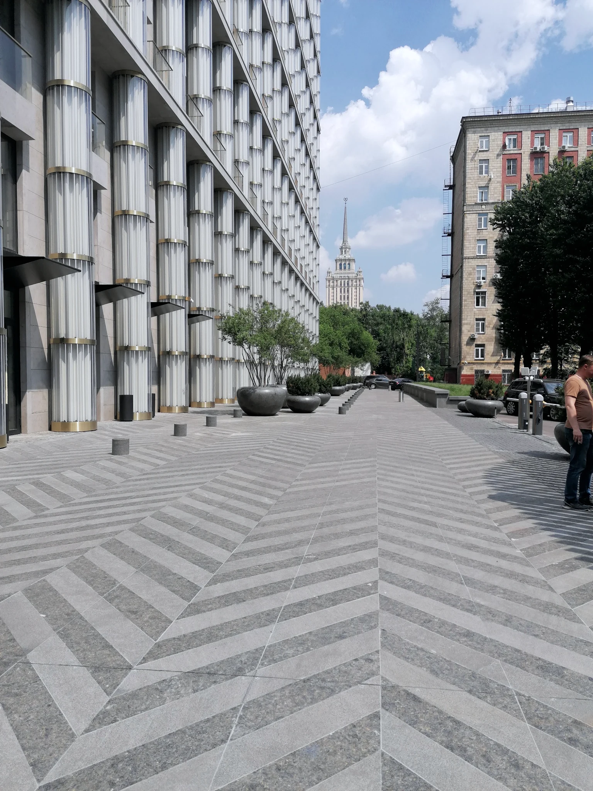

Перед входом в проект
Нужно проверить обязательства, документы, сроки, бюджет и риски до подписания договора, финансирования или принятия объекта.
Строительные проекты · Москва и регионы
Для заказчиков, инвесторов и генподрядчиков. Когда решения по срокам, бюджету, документации и качеству должны опираться на факты.
Сначала — короткий разбор ситуации. Затем определяется формат работы и состав задач.

Георгий ПетровУправление проектами, инженерными системами и критическими этапами строительства.
Ситуации
До того как утверждать бюджет, менять команду, входить в проект или идти к сдаче, важно увидеть фактическую картину и цену ошибки.
Нужно проверить обязательства, документы, сроки, бюджет и риски до подписания договора, финансирования или принятия объекта.
График не отражает реальность, подрядчики не синхронизированы, решения откладываются, а команда работает в постоянном аврале.
Реконструкция, инженерные сети, экспертиза, пусконаладка, подготовка к сдаче или вводу объекта.
Собственнику, инвестору или руководителю проекта требуется независимая оценка до шага, который сложно отменить.
Задачи
Оценить фактическое состояние проекта до финансирования, смены команды, покупки или продолжения работ.
Разобрать причины срыва, вернуть прозрачность по срокам и деньгам, собрать выполнимый план действий.
Связать в одной системе площадку, проектирование, подрядчиков, финансы, документацию и подготовку к сдаче.
Подключиться к этапу, где результат определяется качеством технических решений, документов и координации участников.
Техническая, финансовая и организационная части проекта рассматриваются вместе. Это позволяет видеть не отдельный симптом, а причину, которая тормозит объект.
Избранные проекты
Объекты культурного наследия, премиальная жилая застройка и медицинская инфраструктура.

Клубный дом
Инженерные системы, автоматика, проектные изменения, экспертиза и документация.

Социальный объект
Формирование команды, планирование, приёмка и ввод в эксплуатацию.

Объект культурного наследия
Техническое и финансовое сопровождение реставрационных работ.

Инженерная инфраструктура
ВК, ЛОС, КНС, согласование технических решений и ввод.
Как начинается работа
На старте не нужен идеально собранный пакет документов. Достаточно понять объект, стадию и задачу.
Вы рассказываете об объекте, стадии, сроке и задаче, которая требует внимания.
Определяем, каких данных не хватает и где находится критическая точка.
Фиксируем ожидаемый результат, состав работ, сроки и границы ответственности.
После первичного разбора определяется формат участия и договорная модель для конкретной задачи.
Опишите ситуацию — начнём с предметного разговора о том, что происходит на объекте.